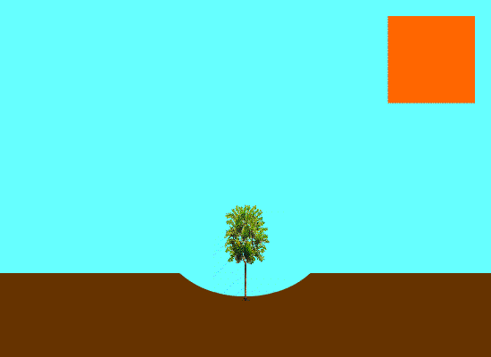

¿Por que es importante la reforestacion?
Hoy por hoy, la reforestación es una operación esencial para la supervivencia de los seres vivos y por ende del planeta.
Teniendo en cuenta la gran cantidad de incendios y talas clandestinas indiscriminadas de árboles, ha ocasionado que la masa verde de nuestro planeta se disminuya.
A consecuencia, el dióxido de carbonoque expulsamos al respirar, poco a poco perderá la oportunidad de ser transformado en oxígeno.
Por ello, plantar un árbol trae consigo beneficios tales como:
- Frena el avance de las dunas de arena.
- Provee madera para uso como combustible doméstico reduciendo el uso de bosques naturales.
- Al restablecer la cobertura arbórea se aumenta la fertilidad del suelo y se mejora su retención de humedad, estructura y contenido de nutrientes mejorando así las cosechas.
- Reduce el flujo rápido de las aguas de lluvia, regulando de esta manera el caudal de los ríos
- Disminuye el "efecto invernadero"
- Reducen la erosión del suelo y contaminación del agua
- Regula las altas temperaturas
Entre otros, la reforestación es de gran importancia para combatir el cambio climático.
